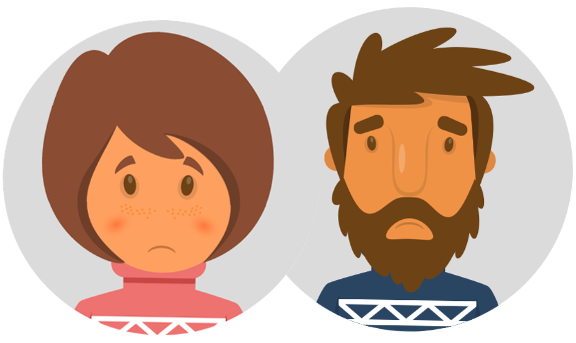

Are you feeling low, down, or depressed?

TreadWill is a website designed to help individuals deal with stress, low mood,
lethargy, and other depressive symptoms. We are conducting a study to see if
TreadWill is effective in helping people deal with these symptoms.